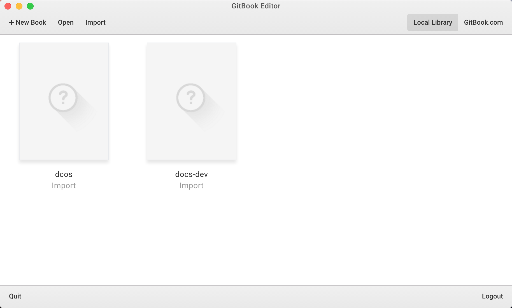
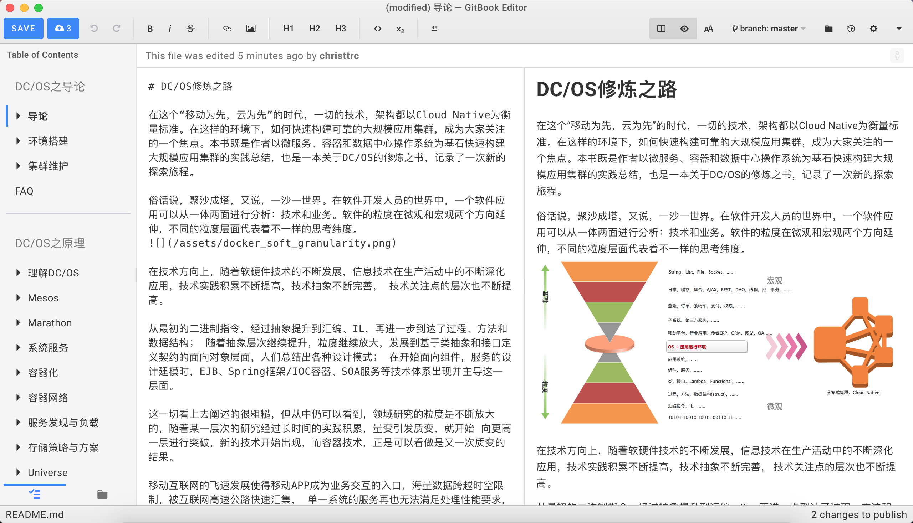
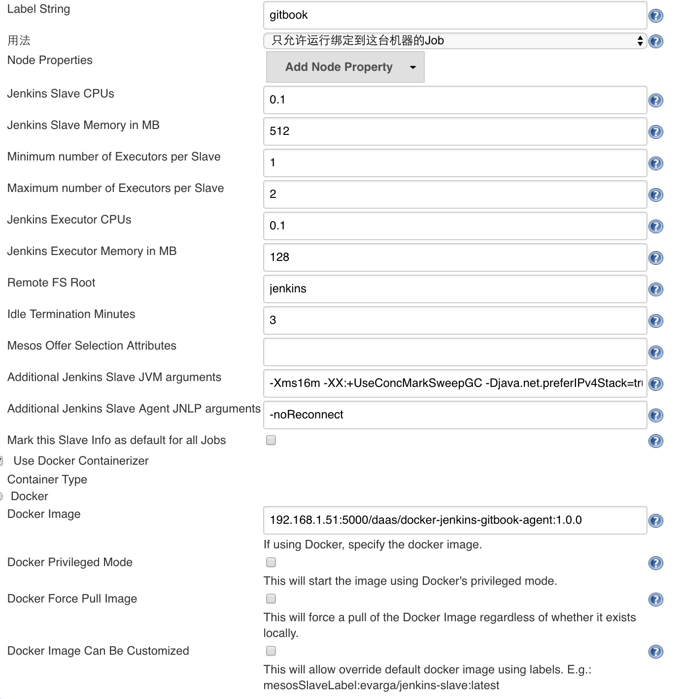
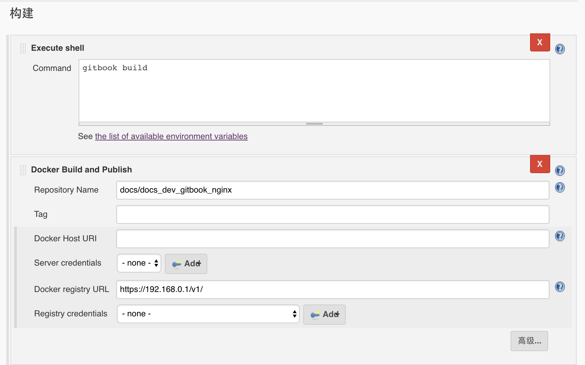
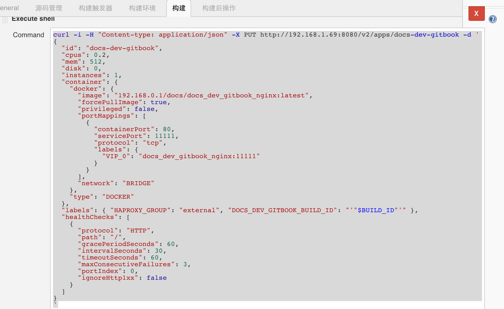
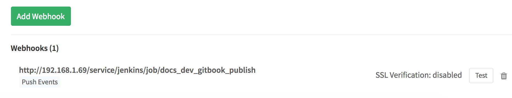

自动发布Gitbook文档
使用Gitbook Editor编写Markdown文档非常方便，而且Gitbook Editor可以直接加载Git仓库，文档的修改可以立即提交。
编写的Markdown文档可以通过gitbook build命令直接编译为静态页面，然后通过Nginx托管。
本文通过下述流程将整个编写及发布的过程自动化起来并最终部署到DC/OS集群中：
Gitbook Editor ---> Gitlab ---> Jenkins ---> Docker(Nginx Image) ---> DC/OS
Gitbook Editor
可以从Gitbook Editor官网下载编辑器，支持Mac，Linux和Windows环境。

可以在Gitbook Editor中创建新的书籍，打开或导入已有书籍。
Gitlab
通过Gitlab可以将书籍编辑的源文件进行版本跟踪。已跟踪的Git仓库可以直接在Gitbook Editor中打开或导入。
如上述示例中，导入了托管在Github的dcos和内部Gitlab服务器上的docs-dev。

在文档Git仓库中添加一个Dockerfile文件，内容如下：
FROM nginx:1.11.8-alpine
COPY _book/* /usr/share/nginx/html后续可以看到如何在文档变更时触发Jenkins的任务自动编译和发布Gitbook文档。
Jenkins
Jenkins在DC/OS中采用DnD方案执行Job，默认的jenkins slave镜像不支持Gitbook环境，需要在mesosphere/jenkins-dind基础上构建一下gitbook编译环境。
FROM mesosphere/jenkins-dind:0.4.0-ubuntu
ENV SSH_KNOWN_HOSTS 192.168.1.54
RUN ssh-keyscan $SSH_KNOWN_HOSTS | tee /etc/ssh/ssh_known_hosts
# gpg keys listed at https://github.com/nodejs/node
RUN set -ex \
&& for key in \
9554F04D7259F04124DE6B476D5A82AC7E37093B \
94AE36675C464D64BAFA68DD7434390BDBE9B9C5 \
0034A06D9D9B0064CE8ADF6BF1747F4AD2306D93 \
FD3A5288F042B6850C66B31F09FE44734EB7990E \
71DCFD284A79C3B38668286BC97EC7A07EDE3FC1 \
DD8F2338BAE7501E3DD5AC78C273792F7D83545D \
B9AE9905FFD7803F25714661B63B535A4C206CA9 \
C4F0DFFF4E8C1A8236409D08E73BC641CC11F4C8 \
; do \
gpg --keyserver ha.pool.sks-keyservers.net --recv-keys "$key"; \
done
ENV NPM_CONFIG_LOGLEVEL info
ENV NODE_VERSION 6.9.4
ARG GITBOOK_VERSION=3.2.0
RUN buildDeps='xz-utils' \
&& set -x \
&& apt-get update && apt-get install -y $buildDeps --no-install-recommends \
&& rm -rf /var/lib/apt/lists/* \
&& curl -SLO "https://nodejs.org/dist/v$NODE_VERSION/node-v$NODE_VERSION-linux-x64.tar.xz" \
&& curl -SLO "https://nodejs.org/dist/v$NODE_VERSION/SHASUMS256.txt.asc" \
&& gpg --batch --decrypt --output SHASUMS256.txt SHASUMS256.txt.asc \
&& grep " node-v$NODE_VERSION-linux-x64.tar.xz\$" SHASUMS256.txt | sha256sum -c - \
&& tar -xJf "node-v$NODE_VERSION-linux-x64.tar.xz" -C /usr/local --strip-components=1 \
&& rm "node-v$NODE_VERSION-linux-x64.tar.xz" SHASUMS256.txt.asc SHASUMS256.txt \
&& apt-get purge -y --auto-remove $buildDeps \
&& ln -s /usr/local/bin/node /usr/local/bin/nodejs
RUN npm --registry=https://registry.npm.taobao.org install --global gitbook-cli &&\
gitbook fetch ${GITBOOK_VERSION} &&\
npm cache clear &&\
rm -rf /tmp/*
镜像构建并编译完成后可以发布到Docker Hub仓库或本地私有仓库。上述Dockerfile可以从Github仓库找到。
配置DC/OS中的Jenkins，添加新的Jenkins Slave镜像并设置标签为“gitbook”。

Docker Image
编译Gitbook的Jenkins Slave镜像准备就绪后，在Jenkins中创建一个自由风格的Job，命名为：“docs_dev_gitbook_publish”。
在这个Job任务中下载文档仓库，调用gitbook-cli编译，打包Docker镜像，并发布到DC/OS。具体配置如下：
Gitbook编译和打包镜像 
发布到DC/OS:

具体脚本参考下文。
DC/OS部署
托管Gitbook的Nginx应用Marathon程序定义如下：
curl -i -H "Content-type: application/json" -X PUT http://192.168.1.69:8080/v2/apps/docs-dev-gitbook -d '
{
"id": "docs-dev-gitbook",
"cpus": 0.2,
"mem": 512,
"disk": 0,
"instances": 1,
"container": {
"docker": {
"image": "192.168.0.1/docs/docs_dev_gitbook_nginx:latest",
"forcePullImage": true,
"privileged": false,
"portMappings": [
{
"containerPort": 80,
"servicePort": 11111,
"protocol": "tcp",
"labels": {
"VIP_0": "docs_dev_gitbook_nginx:11111"
}
}
],
"network": "BRIDGE"
},
"type": "DOCKER"
},
"labels": { "HAPROXY_GROUP": "external", "DOCS_DEV_GITBOOK_BUILD_ID": "'"$BUILD_ID"'" },
"healthChecks": [
{
"protocol": "HTTP",
"path": "/",
"gracePeriodSeconds": 60,
"intervalSeconds": 30,
"timeoutSeconds": 60,
"maxConsecutiveFailures": 3,
"portIndex": 0,
"ignoreHttp1xx": false
}
]
}
'补充
在Jenkins的Job任务中可以看到如下图所示用于触发该任务的URL，Gitlab可以在文档代码提交时通过该URL自动触发任务执行。
在Gitlab的文档代码仓库的Webhooks下添加如下配置：

注意，在DC/OS中，这两处的URL地址稍有不同，推荐使用类似后面的地址，即使Jenkins重新部署，在DC/OS集群的Master节点未变化时，此URL地址不变。